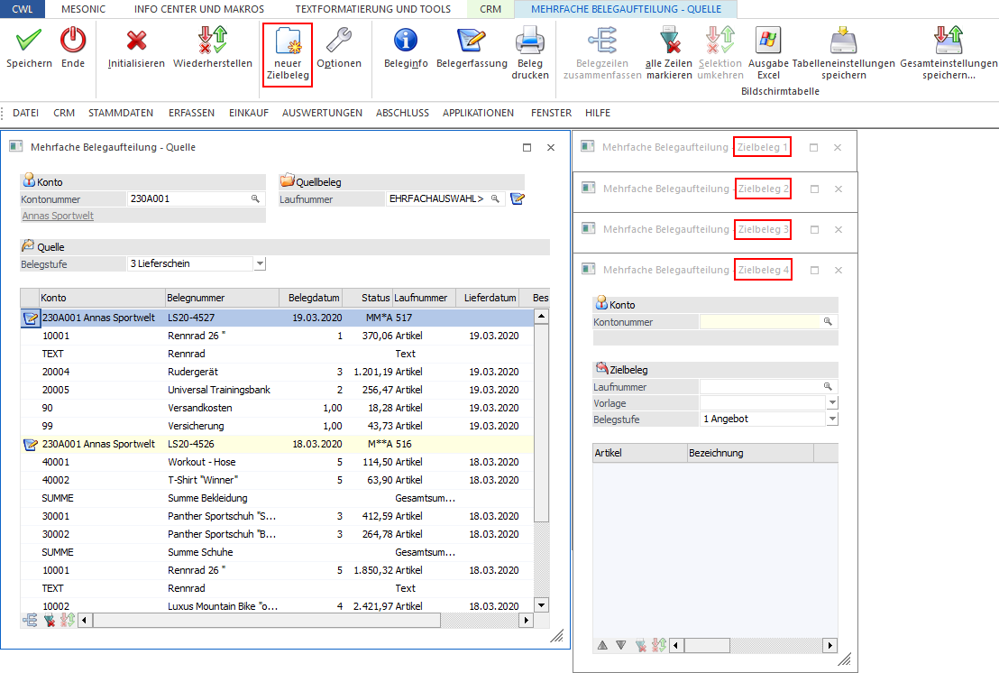
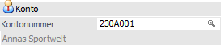
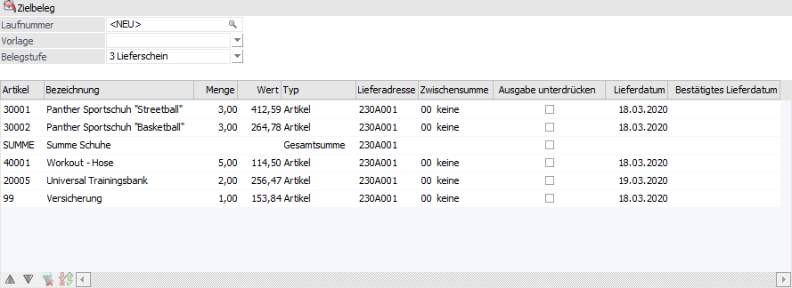
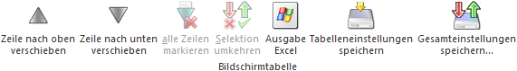
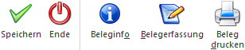

Beim Öffnen des Menüpunktes wird zusätzlich zum Fenster "Mehrfache Belegaufteilung - Quelle" automatisch ein Fenster "Mehrfache Belegaufteilung - Zielbeleg 1" angezeigt. In diesem Fenster kann angegeben werden, wohin die Daten der Ausgangsbelege transferiert werden sollen.
Hinweis
Sollten mehrere Zielbelege notwendig sein, so können weitere Fenster mit Hilfe des Buttons "neuer Beleg" (bis maximal 10 Belege gleichzeitig) geöffnet werden.

Konto

Ø Kontonummer
An dieser Stelle erfolgt die Eingabe der Kontonummer, für welcher der "Zielbeleg" gespeichert werden soll. Unterhalb der Kontonummer wird der Namen des gewählten Kontos angezeigt.
Hinweis
Wenn Zeilen in ein Zielfenster verschoben werden in dem noch keine Zielkontonummer eingegeben wurde, dann wird die Kontonummer des Quellbelegs verwendet und ein neuer Beleg vorgeschlagen.
Achtung
Das Aufteilen von Belegen kann nur zwischen Kunden (Kunde zu Kunde) oder Lieferanten (Lieferant zu Lieferant) erfolgen; dies gilt sinngemäß auch für Interessentenkonten.
Zielbeleg

Ø Laufnummer
Sobald die Kontonummer bestätigt wurde, wird als Laufnummer der Eintrag "<NEU>" vorbelegt. Dies bedeutet, dass bei Belegerstellung die nächste freie Laufnummer des Kontos verwendet und ein neuer Beleg erzeugt wird. Sollte dieses nicht gewünscht sein, so kann auch ein bestehender Beleg geladen werden. Hierfür stehen folgende Sondertasten zur Verfügung
ü F3 / SHIFT+F3
Durch Anwahl der
F3-Taste kann der letzte Beleg (Kontonummer - Laufnummer) übernommen werden,
wobei insgesamt die letzten 20 Belege zur Verfügung stehen (unabhängig vom ggfs.
zuvor erfassten Konto). Wird die Eingabe mit der Enter-Taste bestätigt, so wird
der Beleg in der entsprechenden Belegstufe sofort geladen. Mit der
Tastenkombination SHIFT+F3 kann die Reihenfolge umgekehrt werden.
ü F9
Durch Drücker der Taste F9
wird das Programm "Belege - Matchcode" geöffnet. Hier kann nach dem gewünschten
Beleg gesucht und dieser Übernommen werden.
Achtung
Beim Splitten von Lieferscheinen (siehe Quellbelege) können nur Lieferscheine oder neue Belege verwendet werden. Des Weiteren ist es generell nicht möglich gedruckte Lieferschiene oder Fakturen, sowie erledigte oder stornierte Belege zu laden.
Ø Vorlage
Aus der Auswahlliste kann eine Belegvorlage ausgewählt werden, mit deren Einstellungen der neu erstellte Beleg angelegt werden soll. Folgende Punkte sind hierbei zu beachten:
ü Die Vorlage wird nur bei neu zu erstellenden Belegen angewendet. Wenn bestehende Belege geändert werden sollen, so ist dieses über eine Belegumstellung durchzuführen.
ü Aus der Belegvorlagen werden die Einstellungen aus dem Bereich "Bestelldatei Kopf" berücksichtigt. Die Daten der "Bestelldatei Mitte" ergeben sich automatisch aus dem Quellbeleg.
Ø Tabelle "Zielbelegzeilen"
In dieser Tabelle werden die Zeilen des Zielbelegs dargestellt, wobei die Zeilen zwischen Quell- und Zielbeleg(e) ausgetauscht werden können. Folgende Informationen sind ersichtlich:
ü Artikelnummer
ü Bezeichnung
ü Menge
ü Wert
ü Typ (Artikeltyp)
ü Lieferadresse
ü Zwischensumme
ü Ausgabe unterdrücken
ü Lieferdatum
ü Lieferdatum 2
Hinweis
Die Spalten "Lieferadresse", "Zwischensumme" und "Ausgabe unterdrücken" können bearbeitet werden. In der Spalte "Lieferadresse" wird beim Verschieben von Zeilen aus dem Quellbeleg die Lieferadresse aus dem Quellbeleg übernommen; beim Kopieren von Zeilen wird als Lieferadresse jene des Zielbeleges vorgeschlagen.
Tabellenbuttons

Ø Zeile nach oben / unten verschieben
Durch Anwählen dieser Buttons können Belegzeilen nach oben bzw. nach unten verschoben werden.
Achtung
Das Verschieben von Zeilen findet nur bei neuen Belegen Anwendung. Handelt es sich um einen bestehenden Beleg, so wird das Verschieben von Zeilen nur für neu eingefügte Zeilen berücksichtigt (die neuen Zeilen können nicht in die bestehenden Belegzeilen verschoben werden).
Ø alle Zeilen markieren (nur bei aktivierter Option "Mehrfachselektion in der Tabelle - Auswahlcheckbox")
Mit der Tastenkombination ALT + A oder durch Anklicken des Buttons werden alle Zeilen in der Tabelle markiert.
Ø Selektion umkehren (nur bei aktivierter Option "Mehrfachselektion in der Tabelle - Auswahlcheckbox")
Durch Anwählen des "Selektion umkehren"-Buttons werden aktivierte Zeilen deaktiviert und deaktivierte Zeilen aktiviert.
Ø Ausgabe Excel
Durch Anwahl des Buttons "Ausgabe Excel" wird der Inhalt der Tabelle an Microsoft Excel übergeben.
Ø Tabelleneinstellungen speichern
Die Spalten einer Tabelle können grundsätzlich an beliebige Positionen verschoben, bzw. in der Breite entsprechend angepasst werden. Durch Anwahl des Buttons "Tabelleneinstellungen speichern" werden die Einstellungen benutzerspezifisch gespeichert und bei dem nächsten Aufruf des Programmpunktes wieder vorgeschlagen.
Ø Gesamteinstellungen speichern
Im Gegensatz zu "Tabelleneinstellungen speichern" können mit "Gesamteinstellungen speichern" mehrere Tabellenaufbauten gespeichert und nach Wunsch geladen werden. Zusätzlich werden Sonderfunktionen der Tabelle (z.B. "Spalte gruppieren") ebenfalls bei der Speicherung bedacht.
Buttons

Ø Speichern
Durch Anklicken des Buttons "Speichern" bzw. der Taste F5 werden die Belege gespeichert. Je nach Einstellungen in den Optionen können jene Belege, aus denen die Zeilen verschoben wurden, als erledigte Belege gekennzeichnet werden.
Ø Ende
Durch Anwählen des Buttons "Ende" bzw. der Taste ESC wird das Fenster - nach Bestätigung einer Sicherheitsabfrage - geschlossen.
Ø Beleginfo
Durch Anklicken des Buttons "Beleginfo" wird eine Vorschau des zu erstellenden Belegs angezeigt.
Ø Belegerfassung
Wenn der Button "Belegerfassung" angeklickt wird, dann werden alle bearbeiteten Belege gemäß den Einstellungen gespeichert. Im Anschluss wird der Beleg, in den alle Belegzeilen übergeleitet wurden, im Fenster "Belegerfassung" geöffnet.
Ø Beleg drucken
Durch Anklicken des Buttons "Beleg drucken" wird der Beleg in der gewählten Belegstufe gespeichert und anschließend gedruckt.